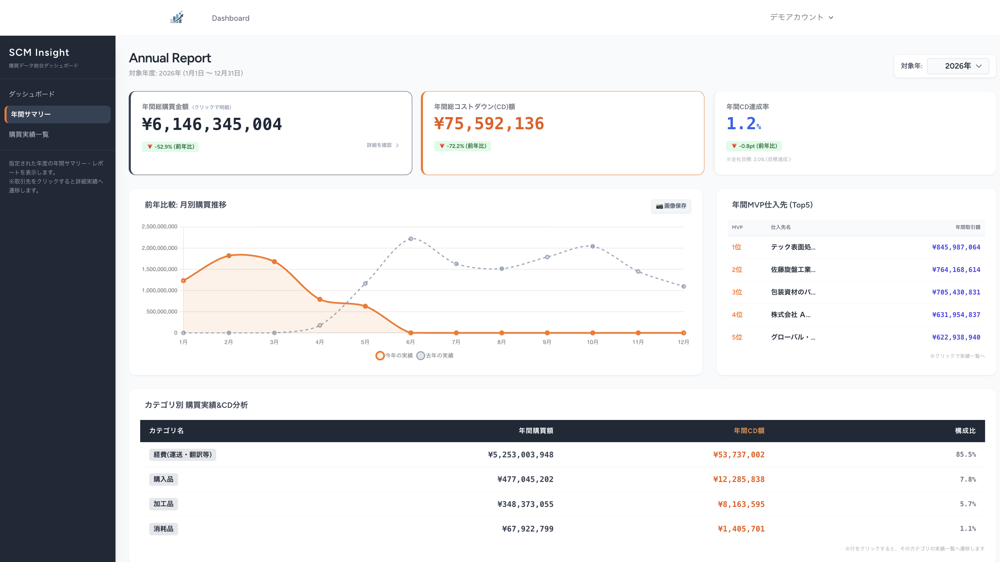

Works

SCM Insight
調達・購買実績ダッシュボード
課題月末の手作業集計により、業務負担とミスが発生
解決策 検収ステータスを軸にした集計ロジックを設計し、ダッシュボードでリアルタイム可視化を実現。
結果月次集計作業の工数削減と、データ可視化による迅速な意思決定を実現
現場起点で、業務を変えるシステムを設計・開発します。
製造業の調達・購買領域で10年間、実務とマネジメントを経験。
現場で感じていた非効率を、自ら解決できるエンジニアになるため開発を学びました。
業務フローを理解した上での設計と、
実運用を前提とした堅牢なバックエンド構築を強みとしています。
現場で感じた違和感が、開発の原点です。
Skills
PHP / Laravel / MySQL / Tailwind CSS / API Integration / Heroku
Works

調達・購買実績ダッシュボード
課題月末の手作業集計により、業務負担とミスが発生
解決策 検収ステータスを軸にした集計ロジックを設計し、ダッシュボードでリアルタイム可視化を実現。
結果月次集計作業の工数削減と、データ可視化による迅速な意思決定を実現
現場課題を本質から解決する開発に携わりたいと考えています。
お気軽にご連絡いただけますと幸いです。
© 2026 M. Uchidate